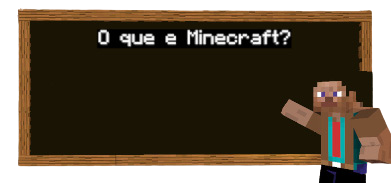
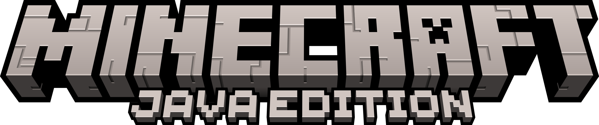
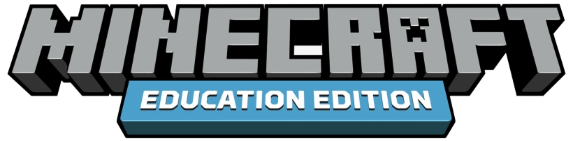

O que é Minecraft?
Minecraft é um jogo de construção em mundo aberto desenvolvido pela Mojang Studios onde jogadores interagem com um ambiente tridimensional totalmente modificável feito de blocos e entidades.
Oficialmente lançado em 18 de novembro de 2011 para Windows, macOS , Linux e alguns dispositivos móveis, sendo posteriormente relançado para uma ampla variedade de plataformas.
Atualmente, existem três edições do Minecraft mantidas ativamente: Edição Java, Edição Bedrock, e Edição Education.
|  |
A versão original de Minecraft, conhecida como Minecraft: Edição Java, foi criada pela Mojang Studios para Windows, Mac OS e Linux. O desenvolvimento foi iniciado por Notch em 10 de maio de 2009 e a primeira apresentação pública do jogo ocorreu em 17 de maio do mesmo ano. A versão completa do jogo foi lançada em 18 de novembro de 2011 durante a MineCon 2011. |
|
A Edição Bedrock (também conhecida como Bedrock Edition, Bedrock Platform, Bedrock Codebase ou Bedrock Engine) é um conjunto de versões multiplataforma do Minecraft desenvolvido pela Mojang Studios, Xbox Game Studios, 4J Studios e SkyBox Labs. |
|
|  |
A versão Education Edition do Minecraft é uma edição especial do popular jogo Minecraft, projetada para uso em ambientes educacionais. Lançada em 2016, a Education Edition oferece aos educadores e alunos uma nova maneira de explorar conceitos e ideias de aprendizagem, usando um ambiente de jogo virtual familiar. |